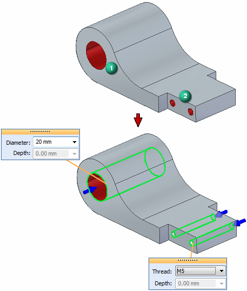

Recognize Holes command
Use the Recognize Holes command  to find candidate holes in a model and replace them with hole features. In the following
example, candidates 1 and 2 are circular cutouts and are replaced with a simple hole
and two threaded holes.
to find candidate holes in a model and replace them with hole features. In the following
example, candidates 1 and 2 are circular cutouts and are replaced with a simple hole
and two threaded holes.

The model can be an imported file or a Solid Edge part or sheet metal file.
The command detects hole candidates from the part geometry of a selected design body. The command detects both complete and partial circular or conical cutouts. It does not recognize circular/conical protrusions.
Environments
In the part environment, the command resides on the Home tab→Solids group→Hole command list and on the Inspect tab→Evaluate group.
In the sheet metal environment, the command resides on the Home tab→Sheet metal group→Hole command list and on the Inspect tab→Evaluate group.
In the assembly environment, the command resides on the Features tab→Assembly Features group→Hole command list and on the Inspect tab→Evaluate group.
How do I
Replace circular cutouts with hole featuresRecognize a hole pattern
Recognize a pattern
Learn more
Feature recognitionRecognizing holes
Hole pattern recognition
Look up more details
Recognize Holes dialog boxRecognize Hole Patterns command
Hole Pattern Recognition dialog box
Chamfer Recognition command
Recognize Patterns command